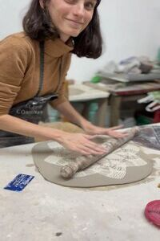

Practicar cerámica como una forma de arte y de expresión se remonta a hace miles de años. Desde la creación de objetos cotidianos hasta la producción de impresionantes esculturas hechas en barro, ha desempeñado un papel importante en la historia de la humanidad. Sin embargo, más allá de su valor histórico y artístico, también puede ser beneficiosa para la salud mental y emocional de las personas. En este artículo, exploraremos los diferentes beneficios que la cerámica puede ofrecer, desde la reducción del estrés y la ansiedad, hasta la mejora de la creatividad y la autoexpresión.

A pura Cerámica nace del espíritu de colaboración entre diferentes artistas del ámbito de la cerámica y de la escultura en otros materiales. Comenzó con dos amigas que decidieron anotarse a un taller en el barrio Lomas de Zamora para crear sus propias piezas de cerámica; con el tiempo comenzaron a crear piezas por su cuenta fuera del taller, dejo de ser un hobby y se convirtio en su pasión. Fue entonces cuando decidieron comenzar este emprendimiento que con el tiempo empezó a crecer y más personas se sumaron a este gran proyecto. Gracias a su aporte se comenzó a crear este espacio que apuesta por crear comunidad y dar la bienvenida a los artistas que quieran formar parte. En un intento de acercar y difundir el arte, logramos mayor visibilidad entre todos.